un giardino di suoni e luci · Miyoo Flip
Fioritura
Pianti una nota: fiorisce sullo schermo e torna a ogni respiro, sempre più piano, finché il giardino non la dimentica. Se lo lasci stare, il giardino sogna e continua da solo. Accanto, in una griglia, le lucciole volano dritte, suonano quando toccano un bordo e girano quando si incontrano.
Non serve saper suonare. È fatta per le cuffie, la sera, o per tenere un sottofondo mentre fai altro. Con un microfono USB ti ascolta: canti e fiorisce, soffi e passa una brezza, batti le mani e passa una lucciola.
Nella Home di Cirmolo, sotto Musica; il codice è in App/Fioritura. Il giardino di questa pagina è una piccola imitazione per il browser: tocca per piantare.
Tocca o clicca per piantare un fiore: l'altezza è la nota, da sinistra a destra lo stereo. Dopo qualche secondo il giardino sogna da solo.
Il giardino
Pianti una nota, torna a ogni respiro
Lo schermo è attraversato dalle corde: le note della scala, tre ottave dal basso all'alto. A pianta un fiore dove sta il cursore; con A tenuto e la croce, ogni corda nuova è un fiore e nascono glissando e arpeggi. La linea sottile in alto è il giro, con un punto per ogni fiore e la luce che scorre.
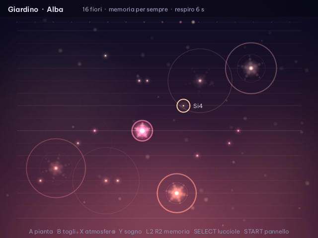
Respiro
La durata del giro. Ogni fiore torna nello stesso punto in cui l'hai piantato.
4–40 s · 14 all'inizioMemoria
Quante volte torna un fiore, ogni volta più piano. Poi se ne va.
1–16 ritorni · o per sempreVento
A ogni ritorno può spostare un fiore di una corda: la melodia cambia piano da sola.
0–100%Sogno
Se non tocchi niente per sei secondi, un cursore fantasma cammina tra le corde e pianta da solo.
Y lo accende e lo spegne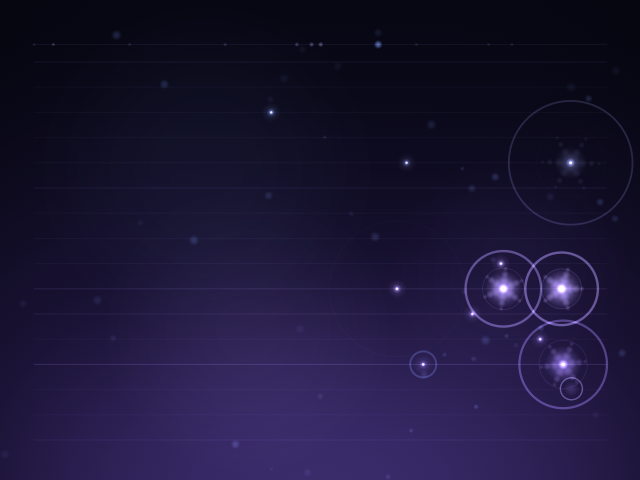
Il bordone
Sotto a tutto respira una nota lunga e bassa, la tonica con la sua quinta. Quando cambi atmosfera scivola sulla tonica nuova.
Spazio e shimmer
Un riverbero lungo; con lo shimmer la sua coda risale di un'ottava, come un coro. L'eco rimbalza da sinistra a destra.
A tempo davvero
Le note si preparano un decimo di secondo prima e partono al campione esatto: ogni luce si accende quando la sua nota esce.
Le lucciole
Tre regole, giri che non finiscono
SELECT porta alla griglia 8×8. A fa nascere una lucciola verso l'alto; premendo ancora la giri a destra, in giù, a sinistra, e al quinto colpo vola via. Y le fa volare, L2 e R2 cambiano il tempo. Ispirate a Otomata di Batuhan Bozkurt.
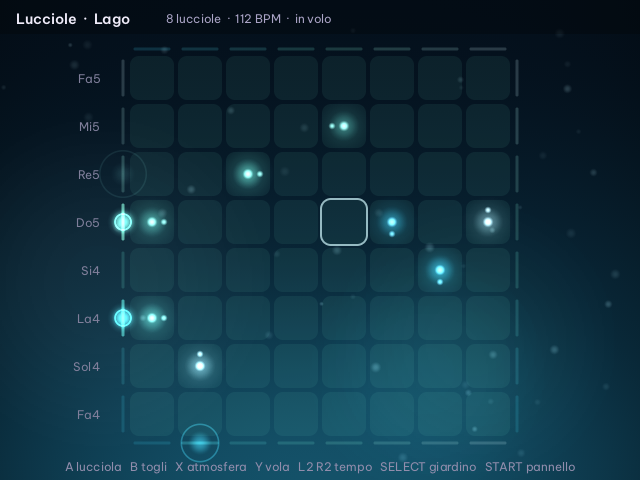
- Volano dritte. A ogni passo, un ottavo del tempo, ogni lucciola avanza di una casella nella sua direzione.
- Il bordo suona. Quando tocca un bordo suona la nota della sua colonna o della sua riga, e torna indietro.
- Chi si incontra gira. Due lucciole nella stessa casella girano tutte e due a destra.
Due o tre lucciole bastano per giri che si ripetono e cambiano piano. Volano anche quando torni al giardino, e il giardino suona mentre guardi le lucciole: si sovrappongono.
Atmosfere
Sei atmosfere, ognuna con il suo strumento
X, L1 e R1 le cambiano: il cielo sfuma nel colore nuovo, la scala e lo strumento cambiano, i fiori restano sulla loro corda e cambiano nota con lei. Dal pannello ogni atmosfera si può ritoccare, e ricorda le sue scelte.
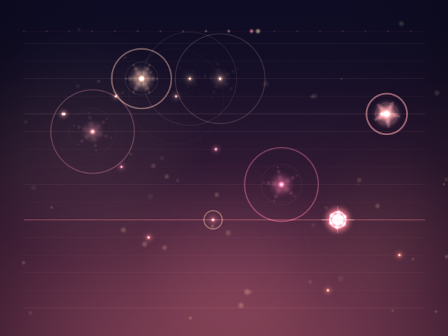
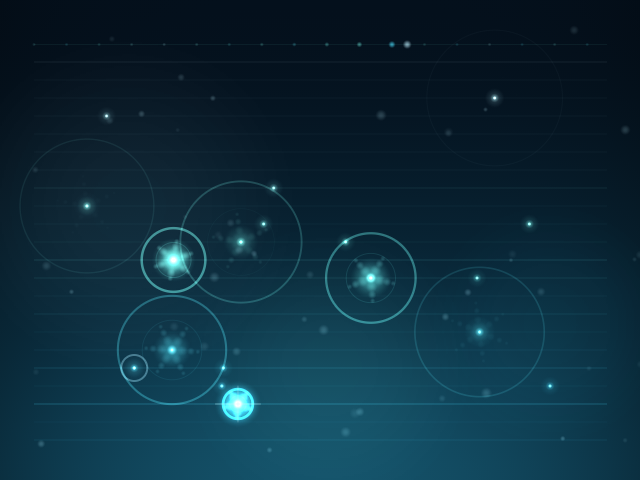
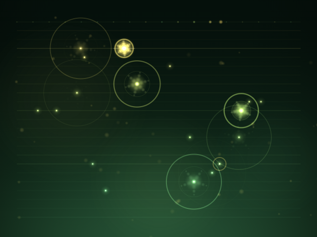
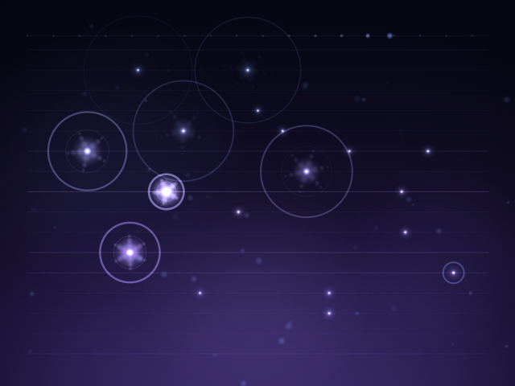
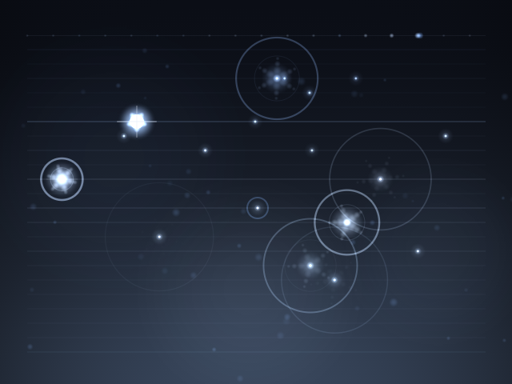
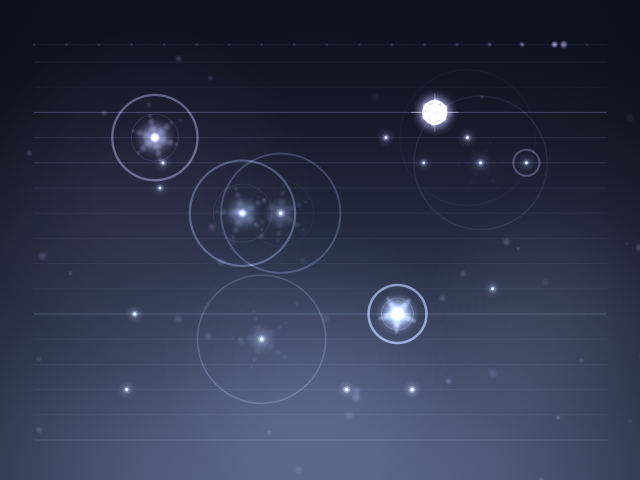
Comandi
Tutto sotto le dita
SELECT tenuto mostra questi comandi sulla console finché lo tieni. MENU, poi A, esce: giardino, lucciole e impostazioni restano salvati e il giardino riprende da dov'era.
Nel giardino
| Croce su e giù | cambia corda, cioè la nota |
| Croce, levetta | sposta il cursore; da sinistra a destra è lo stereo |
| A | pianta un fiore; tenuto, ogni corda nuova suona |
| B · B tenuto | toglie l'ultimo fiore · svuota il giardino |
| X · L1 R1 | atmosfera successiva · precedente |
| Y | sogno acceso o spento |
| L2 R2 | memoria: quante volte torna ogni fiore |
| SELECT | passa alle lucciole |
| START | pannello |
Tra le lucciole
| Croce, levetta | sceglie la casella |
| A | nasce una lucciola, poi la giri; al quinto colpo vola via |
| B · B tenuto | toglie quelle della casella · le libera tutte |
| Y | volano o si fermano |
| L2 R2 | tempo, a passi di 4 BPM |
| X · L1 R1 | atmosfera |
| SELECT | torna al giardino |
| START | pannello |
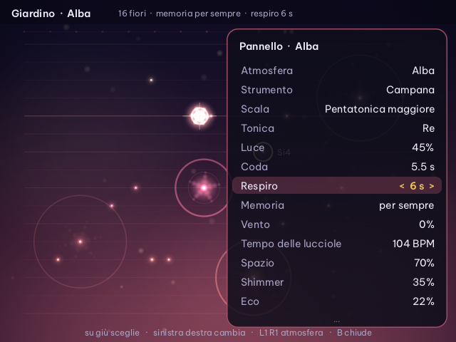
Il pannello
Su e giù scelgono, sinistra e destra cambiano, B chiude. Atmosfera, strumento, scala (dieci, dalla pentatonica alla hirajoshi), tonica, luce, coda, respiro, memoria, vento, tempo delle lucciole, spazio, shimmer, eco, bordone, sogno, volume.
Senti subito
Cambiando strumento, scala, tonica, luce o coda parte una nota di prova. «Ripristina l'atmosfera» rimette tutto com'era.
Launchpad e tastiera MIDI
Una griglia di luci in mano
Collegato alla porta USB-C, un Launchpad Mini MK3 diventa una seconda superficie con i LED a colori. Con una tastiera MIDI, come la MPK mini, ogni nota che suoni diventa un fiore alla sua altezza esatta, e la forza decide quanto è forte.
- La griglia. Nel giardino sono 8 corde, la più grave in basso: ogni pad pianta un fiore e la colonna è lo stereo. Le righe più chiare sono le toniche; i fiori accesi e quelli che tornano si illuminano. Tra le lucciole è la loro griglia: un pad fa nascere o gira una lucciola.
- In alto. ▲ ▼ spostano le corde di un'ottava (tra le lucciole: il tempo), ◀ ▶ cambiano atmosfera, Session cambia modo, Drums accende il sogno, Keys fa volare le lucciole. User si tiene premuto insieme a un pad per togliere le lucciole, o al tasto «svuota».
- A destra. Le sei atmosfere, ognuna con il suo colore; poi «svuota», solo con User tenuto, e «registra», che pulsa rosso mentre registra.
- All'uscita il Launchpad si spegne e torna al suo modo normale.
Microfono
Il giardino ti ascolta
La Flip non ha un microfono interno, ma se ne colleghi uno USB-C (anche una cuffia con microfono, o uno speaker da videochiamate) il giardino comincia ad ascoltare. Le corde vibrano da sole con i suoni della stanza, ognuna con la sua nota, come le corde di un'arpa quando qualcuno canta vicino. E capisce tre gesti.
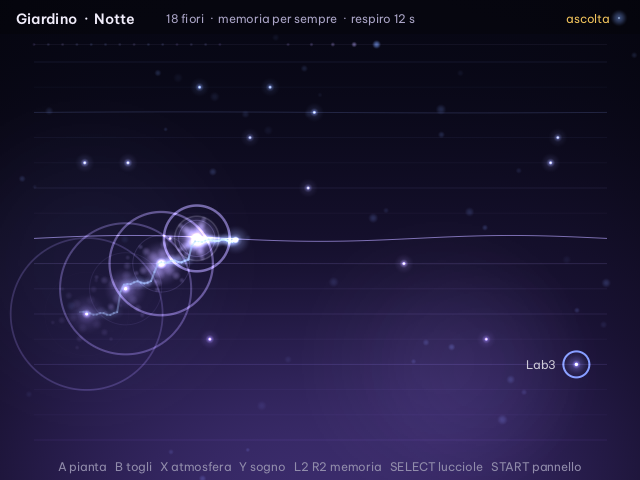
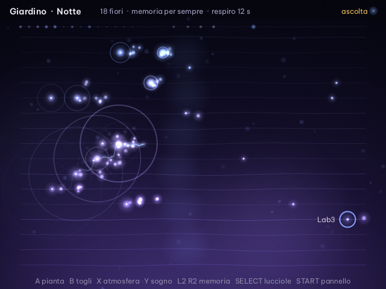
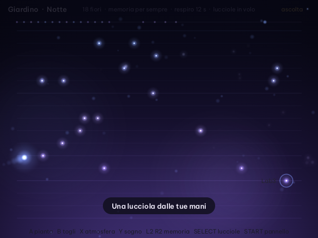
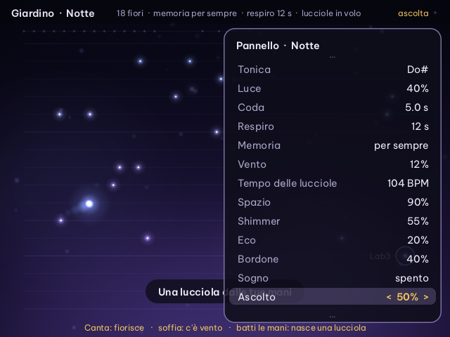
Non ascolta se stesso
Confronta di continuo quello che suona con quello che sente: se il microfono segue il giardino (l'altoparlante della Flip è vicino), in pochi secondi se ne accorge, impara quanto forte gli arriva e ascolta solo quello che lo supera. Una nota che comincia subito dopo la stessa nota del giardino non conta. In cuffia ascolta tutto.
Ascolto
Nel pannello regola la sensibilità o spegne l'orecchio. In alto a destra un puntino si accende con quello che sente. Chi canta tiene sveglio il giardino: il sogno aspetta il silenzio.
10–100% · o spentoRegistrare
Porta il giardino fuori dalla console
Nel pannello, «Registra in WAV» registra quello che senti; in alto a destra compare REC con il tempo, e sullo stesso tasto la registrazione si ferma. Dal Launchpad è l'ultimo tasto a destra. All'uscita una registrazione in corso si chiude da sola.
Saves/fioritura/registrazioni/fioritura-2026-10-12-213000.wav WAV stereo, 48 kHz, 16 bit
Saves/fioritura/stato.txt atmosfere, impostazioni, fiori e lucciole
App/Fioritura/src i sorgenti in C, con 139 prove automatiche